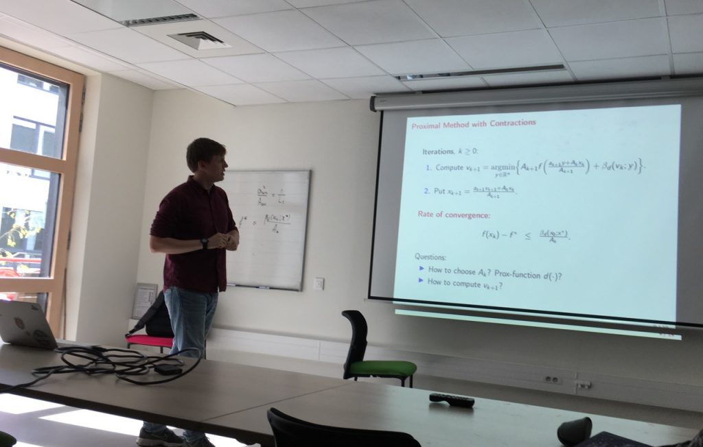
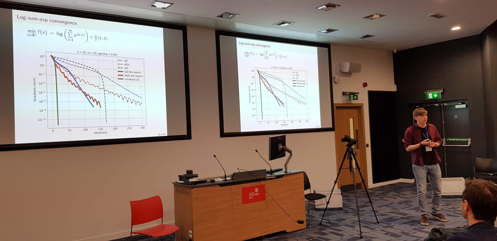
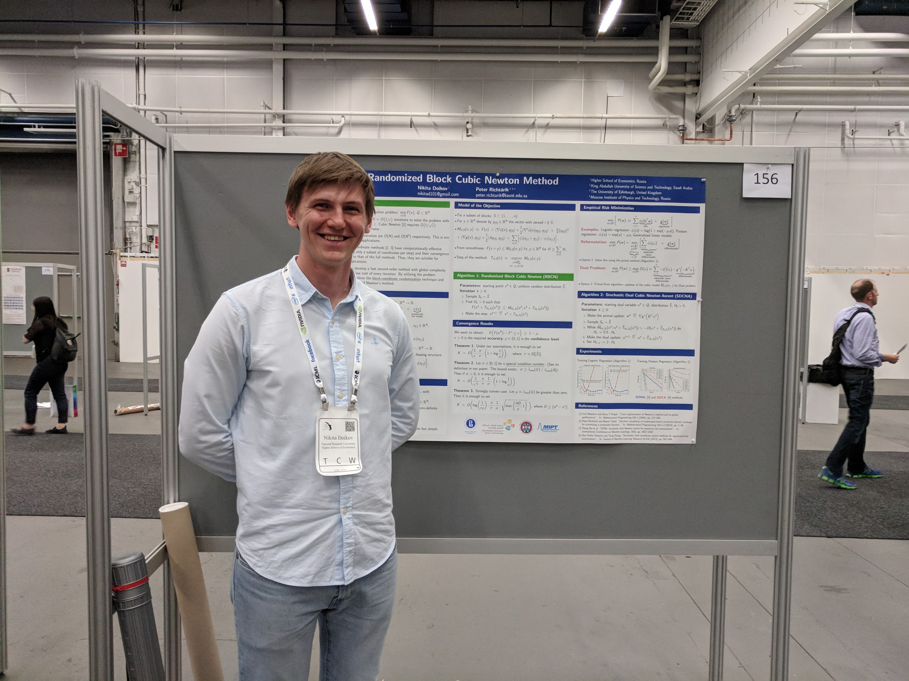
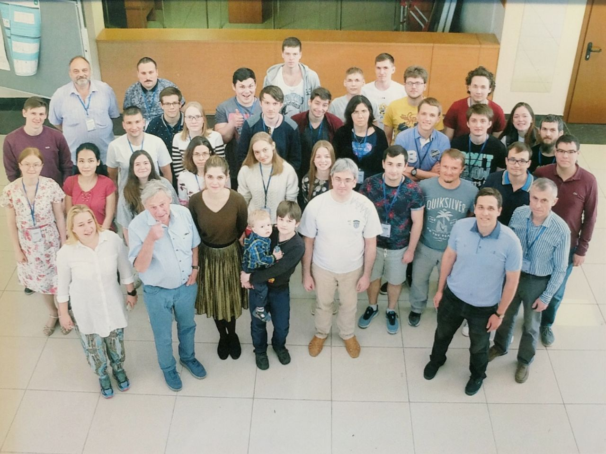
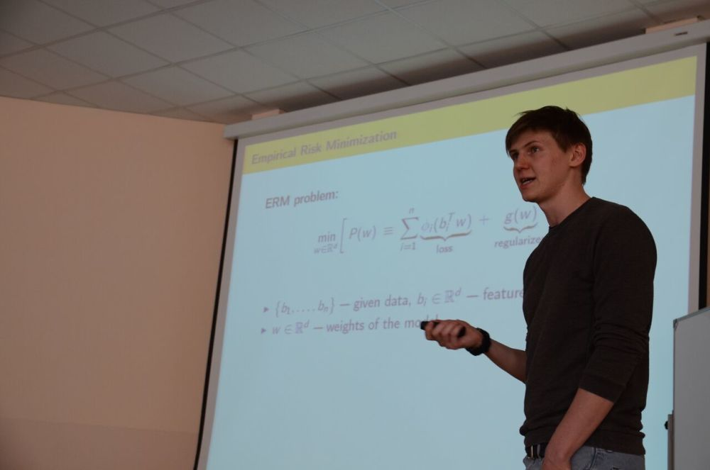

I do research in Computer Science with a focus on Convex Optimization and Machine Learning.
Now I am a PhD student at UCLouvain, Belgium. My scientific advisor is Yurii Nesterov. The topic of my thesis is second-order optimization algorithms.
Papers
- Optimization Methods for Fully Composite Problems, with Yurii Nesterov, 2021
- Affine-invariant contracting-point methods for Convex Optimization, with Yurii Nesterov, 2020
- Convex optimization based on global lower second-order models, with Yurii Nesterov, 2020 (NeurIPS)
- Stochastic Subspace Cubic Newton Method, with Filip Hanzely, Peter Richtárik, and Yurii Nesterov, 2020 (ICML)
- Inexact Tensor Methods with Dynamic Accuracies, with Yurii Nesterov, 2020 (ICML)
- Contracting Proximal Methods for Smooth Convex Optimization, with Yurii Nesterov, 2019 (SIOPT)
- Local convergence of tensor methods, with Yurii Nesterov, 2019 (Math. Program.)
- Minimizing Uniformly Convex Functions by Cubic Regularization of Newton Method, with Yurii Nesterov, 2019 (JOTA)
- Randomized Block Cubic Newton Method, with Peter Richtárik, 2018 (ICML)
Talks
- March 4, 2021: Affine-invariant contracting-point methods for Convex Optimization, Symposium on Numerical Analysis and Optimization, UFPR, online (slides)
- October 28, 2020: Convex optimization based on global lower second-order models, NeurIPS, online (slides, poster)
- June 17, 2020: Inexact Tensor Methods with Dynamic Accuracies, ICML, online (slides, poster, video)
- October 8, 2019: Proximal Method with Contractions for Smooth Convex Optimization, ICTEAM seminar, Louvain-la-Neuve
- September 23, 2019: Proximal Method with Contractions for Smooth Convex Optimization, Optimization and Learning for Data Science seminar (invited by Dmitry Grishchenko) Université Grenoble Alpes, Grenoble (slides) [photo↓]
- September 18, 2019: Complexity of Cubically Regularized Newton Method for Minimizing Uniformly Convex Functions, FGS-19, Nice (slides)
- August 5, 2019: Complexity of Cubically Regularized Newton Method for Minimizing Uniformly Convex Functions, ICCOPT, Berlin
- July 5, 2019: Randomized Block Cubic Newton Method,
Summer School on Optimization, Big Data and Applications, Veroli
[photo↓]

- June 28, 2019: Complexity of Cubically Regularized Newton Method for Minimizing Uniformly Convex Functions EUROPT, Glasgow [photo↓]
- June 20, 2018: Randomized Block Cubic Newton Method, ICML, Stockholm (slides, poster, video) [photo↓]
- June 13, 2018: Randomized Block Cubic Newton Method, X Traditional summer school on Optimization, Voronovo [photo↓]
- April 20, 2018: Coordinate Optimization Methods for Machine Learning, Seminar on Machine Learning, Voronovo (slides) [photo↓]
- October 31, 2017: Cubic regularization of Newton method, All Hands Meeting on Big Data Optimization (invited by Peter Richtárik), KAUST, Thuwal